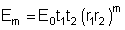
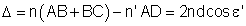
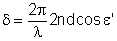
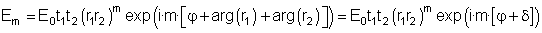
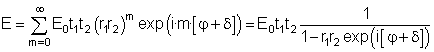
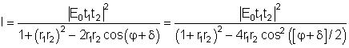
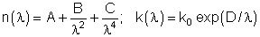

Esta aplicación permite estudiar los factores que intervienen en un experimento con una lámina de caras plano-paralelas. El experimento puede realizarse en dos configuraciones diferentes. En la primera configuración luz de una determinada longitud de onda λ incide sobre una muestra consistente en un substrato con un recubrimiento en lámina delgada en su cara superior. En una segunda configuración se estudian las interferencias por múltiples reflexiones que se producen en una lámina delgada de caras plano-paralelas rodeada de aire. El applet permite estudiar la influencia del grosor (d), del índice de refracción (n) y del coeficiente de extinción (k) de la lámina sobre las propiedades de reflexión y transmisión de la muestra. Además permite visualizar esta influencia en función de la longitud de onda mediante una representación gráfica (espectro).
Finalmente, el applet tiene la posibilidad de realizar un experimento virtual donde, a partir de un espectro procedente de una medida experimental se deducen los valores de índice de refracción y grosor de la lámina.
El elemento más importante que permite calcular el applet es el espectro de Reflectancia (R) y Transmitancia (T) de la muestra. Para calcular los valores de (R) y (T) a partir del índice de refracción n, del coeficiente de extinción (k) y el grosor de la lámina (d) debe considerarse el modelo de la figura 1.
Figura 1: Esquema de las múltiples reflexionas en el interior de la lámina de caras plano-paralelas
Sea una onda plana que incide desde el medio (de índice de refracción 1) sobre la lámina con una ángulo de incidencia ε y que tiene una amplitud E0. La amplitud de la onda transmitida al interior de la lámina será E0t1, donde t1 es el coeficiente de Fresnel de transmisión des del medio hacia la lámina. Este coeficiente puede ser tanto el que corresponde a la polarización 's' o a la 'p'. En el interior de la lámina esta onda se propaga en una dirección que forma un ángulo ε’ respecto la perpendicular a la superficie y experimenta múltiples reflexiones. La amplitud de la onda después de la primera reflexión en la interfase lámina-substrato es E0t1r2 donde r2 es el coeficiente de Fresnel de reflexión desde la lámina hacia el substrato. La onda reflejada en este mismo punto tiene una amplitud de E0t1t2 donde ahora t2 es el coeficiente de Fresnel de transmisión de la lámina hacia el substrato. Después de la segunda reflexión en el interior de la lámina la amplitud de la onda es E0t1r2r1 donde r1 es el coeficiente de Fresnel de reflexión desde la lámina hacia el medio. Esta luz se transmite al substrato con una amplitud E0t1r2r1t2. De aquí puede escribirse que la amplitud de la m-éssima onda transmitida es:

Figura 2: Cálculo de la diferencia de camino óptico entre dos ondas transmitidas consecutivas
El siguiente paso consiste en estudiar la fase relativa de cada una de las ondas transmitidas. Para realizar este cálculo deben tomarse dos puntos de referencia situados en un mismo plano perpendicular a la dirección de propagación de la onda después de atravesar la lámina, tal y como se indica en la figura 2. Puede demostrarse que la diferencia de camino óptico entre dos ondas transmitidas consecutivas es:

La fase que corresponde a este camino óptico es:

Por lo tanto, la amplitud compleja de la onda transmitida resultante puede escribirse como:

En la expresión anterior se han escrito por separado el módulo y la fase de los factores r1 y r2. Las fases arg(r1) y arg(r2) pueden ser diferentes de 0 en algunos casos como por ejemplo cuando el índice de refracción del substrato es mayor que el de la lámina (arg(r2)=π) o cuando el índice de la lámina es complejo (k≠0, arg(r1)≠0 y arg(r2)≠0).
La amplitud total es el resultado de la suma de todas las amplitudes de las ondas transmitidas:

La intensidad de la onda es proporcional al módulo al cuadrado de la amplitud compleja:

donde se ha usado la relación cos(φ)=2cos2(φ/2)-1. Examinando la expresión anterior se pueden deducir las condiciones que debe cumplir la diferencia de fase φ para que la luz transmitida sea máxima o mínima. Por ejemplo para una lámina perfectamente dieléctrica (con k=0) estas condiciones se resumen en la siguiente tabla:
| (m=0,1,2,...) | n<n' | n>n' |
| Máxima intensidad transmitida | 2ndcos(ε’)=mλ | 2ndcos(ε’)=(2m+1)λ/2 |
| Mínima intensidad transmitida | 2ndcos(ε’)=(2m+1)λ/2 | 2ndcos(ε’)=mλ |
Por lo que se refiere a la reflectancia, el comportamiento es el opuesto al de la transmitancia: cuando la segunda es mínima la primera es máxima y viceversa. En el caso en que una lámina no sea perfectamente dieléctrica (y por tanto con coeficiente de absorción no nulo) las condiciones para máximo o mínimo de interferencia son más complejas ya que se debe tener en cuenta la fase δ.
La reflectancia y transmitancia finales de la muestra dependen asimismo de la reflectancia y de la transmitancia de la segunda cara del substrato. Ya que éstas últimas no dependen de las características de la lámina, son fijas y por tanto la segunda cara del substrato no tiene efecto en la distribución de máximos y mínimos de R y T.
Esta ventana presenta un esquema de la muestra con el substrato en azul y la lámina depositada en la cara superior del substrato en amarillo. La luz incidente se representa por un conjunto de haces en color verde mientras que la luz reflejada se representa por haces de color magenta y la luz transmitida por haces en color cyan. El esquema incluye también los valores de transmitancia (T) y reflectancia (R). Cabe notar que la luz incidente se considera monocromática y con polarización natural (es decir, una superposición uniforme de todos los posibles estados de polarización).
En la ventana "Transmisión y Reflexión" pueden cambiarse el grosor de la lámina (d, la longitud de onda de la luz incidente (λ), y el ángulo de incidencia de la luz (θ). Asimismo se pueden cambiar los valores del índice de refracción (n) y del coeficiente de extinción k mediante los botones "Cambiar n" y "Cambiar k". Estos botones abren unas ventanas con los nombres "Parámetros del índice de refracción" y "Parámetros del coeficiente de extinción" respectivamente. Estos parámetros corresponden a un modelo matemático para el índice de refracción y el coeficiente de extinción con la expresión:

Estas ventanas permiten cambiar los valores de A, B, C, k0 y D y además muestran una representación gráfica de los valores de estos índices en función de la longitud de onda.
Esta ventana presenta un esquema del recorrido de una onda en el interior de la lámina de caras plano-paralelas. Para la longitud de onda seleccionada muestra el índice de refracción y el coeficiente de extinción de la lámina (n_l y k_l en el diagrama), así como el índice de refracción del substrato. La ventana permite variar el grosor de la lámina d, la longitud de onda λ, y el ángulo de incidencia ε. Además también pueden cambiarse los valores del índice de refracción y del coeficiente de extinción mediante los botones “Cambiar n” y “Cambiar k”.
Esta ventana presenta los espectros de reflectancia y transmitancia de la muestra. Se debe tener en cuenta que estos valores son el resultado de la transmisión y la reflexión en la lámina de caras plano-paralelas y también en la cara posterior del substrato. Situando el cursor sobre la gráfica se pueden leer en la parte inferior de la ventana los valores correspondientes a su posición respecto de los ejes de coordenadas. El botón “Configurar Gráfica” permite definir la forma en que se presentan los datos. Permite definir el rango de longitudes de onda que se representan y también el rango de valores de reflectancia y transmitancia. Este último rango también se puede asignar automáticamente con los botones de la parte inferior de la ventana. Así, el botón "Rango de R/T 0-1" asigna el valor 0 al “Valor de T y R inicial” y 1 al “Valor de T y R final”. El botón “Rango Automático” asigna automáticamente el mínimo rango de R/T que permite representar simultáneamente los dos espectros. Los botones “Rango Automático R” y “Rango Automático T” asignan automáticamente un rango en el que se pueden visualizar por completo el espectro de R o de T respectivamente.
Para la opción “Variable: Longitud de onda” esta ventana muestra una lista de los máximos y los mínimos de T que pueden verse en la ventana "Espectro". Esta lista se calcula para los valores de n(λ), k(λ), grosor de la lámina y ángulo de incidencia seleccionados. Para la opción “Variable: ángulo” esta ventana muestra una lista de máximos y mínimos de la Transmitancia en función del ángulo de incidencia para la longitud de onda seleccionada en la ventana de la izquierda.
El botón "Experimenta" simula una situación experimental en la cual se tiene una muestra compuesta de un substrato recubierto por una lámina de caras plano-paralelas transparente (k=0) de espesor y índice de refracción desconocidos. En la ventana "Espectro" se presentan dos espectros (en azul y en amarillo, R exp y T exp) que corresponden a la muestra desconocida y dos espectros que corresponden al modelo con los valores seleccionados para las variables del programa. El experimento virtual consiste en encontrar el valor del espesor d y de las variables A y B que caracterizan el comportamiento espectral del índice de refracción. Para cambiar los valores de A y B debe usarse el botón"Cambiar n" de la mitad izquierda de la ventana del programa. El procedimiento para deducir los valores de estas variables es el de prueba y error: 1) variar uno de los valores característicos y ver la influencia de esta variación en el espectro, 2) comprobar si esta variación hace que el espectro calculado se parezca al experimental y 3) en caso de ser así aceptar el cambio hecho y intentar cambiar otra de las variables.
| Transmisión y Reflexión | Diferencia de fase | Experimenta | |||
| Reflectancia | R | Índice de refracción de la lámina | n_l | Reflectancia de la muestra desconocida | R exp |
| Transmitancia | T | Coeficiente de extinción de la lamina | k_l | Transmitancia de la muestra desconocida | T exp |
| Índice de refracción de la lámina | n | Índice de refracción del substrato | n_s | ||
| Coeficiente de extinción de la lámina | k | Longitud de onda | λ | ||
| Ángulo de propagación en el interior de la lámina | θ | ||||
| Cambiar n | Cambiar k | ||
| Coeficientes característicos del índice de refracción | A, B, C | Coeficientes característicos del coeficiente de extinción | k0, D |